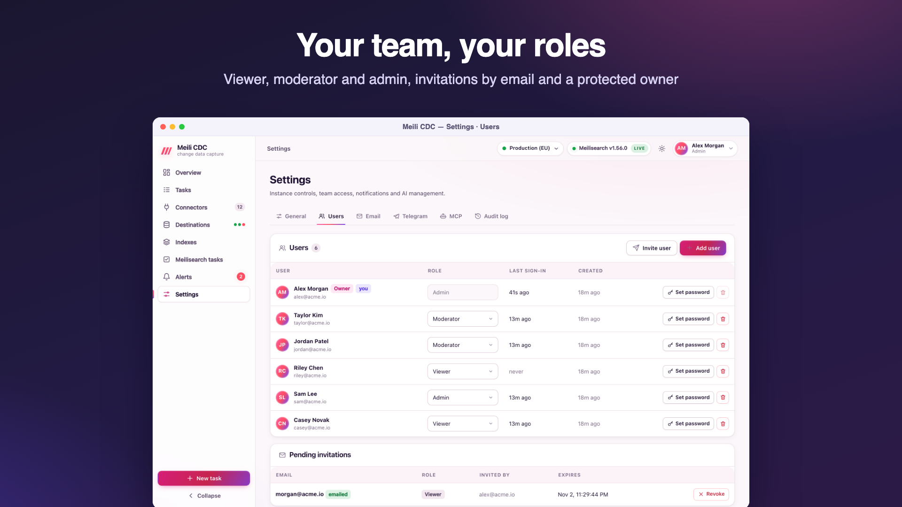

Team and security
Accounts with three roles, an owner who cannot be locked out, server-side sessions with CSRF protection, brute-force limits, an audit log, and credentials encrypted at rest.
Roles
| Role | Can |
|---|---|
viewer | Read everything except users, invitations, SMTP and Telegram settings, MCP settings and tokens, the task export and the audit log. Search indexes and preview settings. |
moderator | Viewer, plus operate existing tasks: start, stop, pause, resume, restart, resync, reset checkpoint (one or in batch), run diffs and repairs, replay and discard dead letters, test task definitions, push to webhook tasks, cancel Meilisearch tasks, run destination health checks. |
admin | Everything: create, edit, delete, import and export tasks; connectors and destinations; index changes (create, delete, settings, primary key, swap, compact); dumps, snapshots and experimental features; users and invitations; SMTP and Telegram; alert rules; MCP; the audit log. |

Permission matrix
The server enforces a role per API route. Routes not listed below need viewer for GET and admin for everything else, so new routes are locked down by default. The dashboard hides or disables what your role cannot do, and the server answers 403 {"error":"requires role moderator"} if you try anyway.
| Route | Viewer | Moderator | Admin |
|---|---|---|---|
Any other GET (tasks, logs, metrics, schema check, diff report, DLQ, indexes, settings, documents, connectors, destinations, alert rules and history, overview, /metrics, events) | yes | yes | yes |
POST /indexes/{uid}/search, POST /indexes/{uid}/settings/preview | yes | yes | yes |
GET/PATCH /auth/me, POST /auth/me/password | yes | yes | yes |
POST /tasks/{id}/{action}, POST /tasks/batch (except delete) | no | yes | yes |
POST /tasks/test (test a task definition) | no | yes | yes |
POST /tasks/{id}/diff, POST /tasks/{id}/diff/repair | no | yes | yes |
POST /tasks/{id}/dlq/replay, DELETE /tasks/{id}/dlq | no | yes | yes |
POST /ingest/{id} (tasks without a signing secret) | no | yes | yes |
POST /meili/tasks/cancel, POST /destinations/{id}/health/check | no | yes | yes |
GET /tasks/export, GET /users, GET /invitations, GET /settings/smtp, GET /settings/telegram, GET /settings/mcp, GET /mcp/tokens, GET /audit | no | no | yes |
Every other POST, PUT, PATCH, DELETE (task create, update, delete, import; batch delete; connectors and destinations, including their test endpoints; indexes; dumps; snapshots; experimental features; users; invitations; settings; alert rules; MCP) | no | no | yes |
Connector and destination tests need admin
docs/api.md and the dashboard list testing connectors and destinations as a moderator action, but the server's route table does not include POST /connectors/test, /connectors/{id}/test, /destinations/test or /destinations/{id}/test, so the default rule applies and they require admin; a moderator gets 403. Moderators can still test a task's connection with Test connection in the task wizard.
All routes are under /api/v1. Public routes (no authentication): GET /health, GET /auth/config, POST /auth/setup, /auth/login, /auth/logout, /auth/forgot, /auth/reset, GET /auth/invite/{token}, POST /auth/invite/accept, plus /healthz outside the API.
Adding people
- Invite (Settings → Users, admin): enter an email and a role. The invitation link is valid for 7 days and works once. With SMTP configured it is emailed; otherwise (or as well) the link is shown once so you can send it yourself. The invitee chooses a name and password and is signed in.
- Create directly: an admin can create an account with a password (API
POST /api/v1/users), or on the server withmeilisearch-cdc admin users create. - Passwords have 8 to 128 characters and are hashed with argon2id.
Password reset
- Forgot password appears on the sign-in page only when SMTP is configured. It always answers the same way, whether or not the email exists, and emails a link valid for one hour. Using it sets the new password and signs the user out of other sessions.
- An admin can set another user's password (that user's sessions are revoked), except the primary administrator's.
- Each user can change their own password from the user menu (other sessions are revoked).
- Without email, and for the primary administrator, use the CLI:
meilisearch-cdc admin users reset-password --email … --generate. See recovery recipes.
The primary administrator
The first admin (created by the setup page or CDC_ADMIN_EMAIL) is the primary administrator, or owner. On data from an older version, the oldest admin becomes the owner at startup. In the dashboard and the API, for every caller, the admin token included:
- nobody can change their own role;
- nobody can change the owner's role or delete the owner (
403); - only the owner can set the owner's password;
- the last admin cannot be demoted or deleted (
409), and you cannot delete yourself.
Only the server CLI transfers ownership (admin users set-owner, to another admin) or resets the owner's password. To demote or delete the owner, transfer ownership first.
Sessions and CSRF
- Signing in creates a server-side session and sets the cookie
cdc_session(HttpOnly,SameSite=Lax,Path=/). It isSecureon HTTPS, behind a proxy that sendsX-Forwarded-Proto: httpswithCDC_TRUST_PROXY, or always withCDC_COOKIE_SECURE. - Sessions last 7 days and slide: activity extends them. Signing out revokes the session.
- Cookie-authenticated writes (
POST,PUT,PATCH,DELETE) must come from the same origin: theOriginheader (orReferer) must match the request's host, otherwise403 cross-origin request refused. Browsers send it automatically; bearer-token requests are not subject to it. - Admins can sign everyone out with
meilisearch-cdc admin sessions revoke.
Rate limiting
| What | Limit |
|---|---|
| Failed sign-ins per client IP | 30 per 15 minutes |
| Failed sign-ins per account (email) | 10 per 15 minutes; a successful sign-in resets it |
| Forgot password requests per IP | count against the same IP limit, success or not |
| Wrong current password when changing one's own password | 10 per 15 minutes per user |
A blocked request gets 429 with a Retry-After header and {"error":"too many attempts, try again later","retryAfter":n}. Behind a proxy, enable CDC_TRUST_PROXY so the limit applies to the real client IP.
Audit log
Settings → Audit log (admin) lists, newest first, who did what, when and from which IP:
- sign-ins (
auth.login), failed sign-ins (auth.login_failed), setup, invitation acceptance, reset requests and password resets; - every successful write through the API or the dashboard, recorded with the route as its action (for example
POST /api/v1/tasks/{id}/{action}) and the path as its target; - every mutating MCP tool call (
mcp.<tool>, with its arguments); - every CLI command, refused ones included (
cli.<command>, usercli). Passwords are never recorded.
The most recent 20,000 entries are kept. API: GET /api/v1/audit?limit=200.
The static admin token
CDC_ADMIN_TOKEN (or CDC_ADMIN_TOKEN_FILE) defines one bearer token with the admin role, for scripts, CI, Prometheus and webhook pushers. It acts as a user named API token; the dashboard's sign-in page also offers Use an API token instead. The service keeps only its hash in memory. Rotate it by changing the variable and restarting. Generate a long random value:
openssl rand -hex 32
curl -H "Authorization: Bearer $CDC_ADMIN_TOKEN" https://cdc.example.com/api/v1/tasksAI agents get their own revocable, role-scoped tokens instead; see MCP.
Secrets encryption
- Connector passwords (in connection strings), DynamoDB secret keys, Meilisearch API keys, the SMTP password, the Telegram bot token and webhook signing secrets are encrypted with AES-256-GCM before they are stored.
- Each ciphertext is bound to its record and field (associated data such as
task:<id>:dsnordestination:<id>:apiKey), so a value copied into another record cannot be decrypted there. - Secrets stay encrypted in memory and are decrypted only when a connection is opened. The API never returns them: they come back as
••••••, and sending the mask back keeps the stored value. - The key is
CDC_SECRET_KEY(a base64 string of exactly 32 bytes is used directly, anything else is a passphrase stretched with argon2id), or, when it is unset, a random key generated once in<data-dir>/secret.key(mode0600). SettingCDC_SECRET_KEYlater makes the service ignoresecret.key, so rotate as below rather than just switching. - Passwords of user accounts are not encrypted but hashed (argon2id); MCP tokens and the admin token are stored or held as hashes.
Rotating the key
The service holds a key ring: the current key encrypts, and CDC_SECRET_KEY_PREVIOUS can still decrypt. At startup every secret still encrypted with the previous key (or stored in an older format, or in plain text) is re-encrypted with the current one.
- Generate a new key:
openssl rand -base64 32. - Set
CDC_SECRET_KEYto the new key andCDC_SECRET_KEY_PREVIOUSto the old one. If the old key was the generated file, use its content:CDC_SECRET_KEY_PREVIOUS="$(cat /var/lib/meilisearch-cdc/secret.key)". - Restart. The log shows
re-encrypted stored secrets with the current keyfor tasks and connectors; destinations and notification settings are re-encrypted as they load. - Check that tasks run and connectors test fine, take a backup, then remove
CDC_SECRET_KEY_PREVIOUSand restart again.
Only one previous key is supported at a time. A value encrypted with a key that is not configured fails with value was encrypted with a key that is not configured (set CDC_SECRET_KEY_PREVIOUS). Give the admin CLI the same key variables as the service.